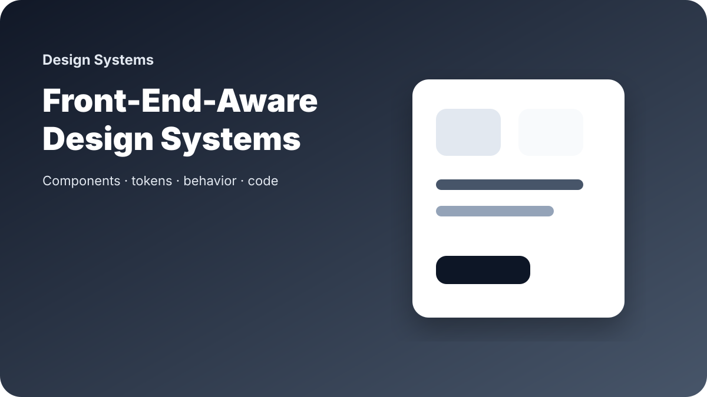

How I Think About Design Systems as a Front-End-Aware Designer

I think about design systems from both sides: how they help designers make faster decisions, and how they help developers build consistent interfaces without guessing.
A component is not complete just because it looks good in Figma. It also needs behavior, states, content rules, accessibility expectations, and responsive guidance.
Reusable does not mean rigid
A useful system gives teams strong defaults but still leaves space for real product problems. The goal is not to force every screen into the same shape. The goal is to reduce repeated decisions and make important decisions easier.
Tokens are design decisions
Color, spacing, typography, radius, elevation, and motion tokens should not be random names. They should describe the system clearly enough that both design and code can share the same language.
Front-end awareness improves design quality
Knowing how layouts respond, how components are built, and where implementation can break helps me design with more realistic constraints. It also makes handoff cleaner.
A design system should reduce confusion for both the people designing and the people building.
That is the version of design systems I care about: practical, documented, usable, and close to implementation.